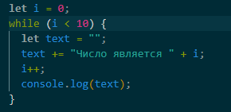
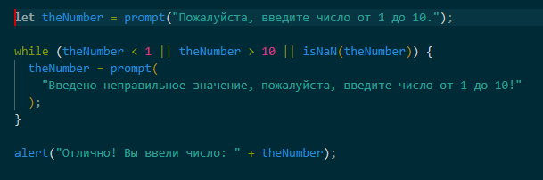
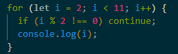

Ответ: из двух: условие и тело цикла.
Ответ: практически любое. Циклы можно вкладывать друг в друга большое количество раз. Это зависит от конкретной задачи и предметной области.
Ответ: инструкция return
Ответ: можно пропустить любую часть цикла for.
Например, можно пропустить начало, если нам ничего не нужно делать
перед стартом цикла.
Можно убрать шаг (i++)
А можно убрать вообще все, и получить бесконечный цикл for(;;).
Ответ: цикл while выполняется до тех пор, пока выполняется
условие.
Тело цикла должно быть организовано так, чтобы условие рано или
поздно
перестало выполняться.
Пример 1: код будет выполняться, пока переменная будет меньше
10.

Пример 2: просим пользователя ввести число от 1 до 10. Если он
введет неправильное число,
то мы просим снова ввести значение и проверяем соблюдение
условия.

Ответ: с помощью директивы break.
Ответ: 
Ответ: для цикла while да. Если условие цикла будет ложным перед запуском первой итерации, то цикл не запустится.
Ответ: 0, 1, 2
Ответ: нет разные. Первый выведет: 1, 2, 3, 4. Второй: 1, 2, 3, 4,
5.
Потому что в первом случае у нас префиксная нотация, при которой
сначала происходит изменение переменной, а потом ее возврат.
Во втором случае, постфиксная нотация, при которой сначала
переменная возвращается, а потом происходит ее изменение.